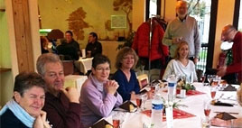
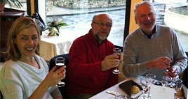
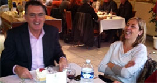

|
Mercredi, 06 Février 2013 00:00 |
|  |
Vendredi 14 décembre 2012, une rencontre conviviale autour d’un repas a eu lieu avec notre partenaire, le Secours Catholique, au restaurant d’application de l’EPMS de l’Ourcq à Claye-Souilly.
Voici l’interview d’Alain réalisée par les jeunes adultes du CAJ Pro de Villeparisis à la suite de l’invitation du Secours Catholique autour de ce repas :
|
|
Pourquoi ce repas a-t-il eu lieu ? (Mary)
- Alain : "Ce repas a eu lieu dans le cadre de la collaboration que nous développons ensemble tout au long de l’année et de nos relations amicales".
Qui représentait le CAJ Pro ? (Malik)
- "Yannick, Le chef de service, a souhaité que ce soit moi, Alain, qui représente le CAJ Pro car je suis à l’initiative de ce partenariat".
Est-ce que les gens du Secours Catholique ont été contents de notre travail ? (Malik)
- "Tout le travail fait par les jeunes du CAJ Pro pour le Secours Catholique a été mis en valeur par les bénévoles qui souhaitent continuer cette collaboration avec nous".
|
 |
|  |
« Nous avons échangé sur nos expériences de travail autour des personnes handicapées et des personnes en situation de précarité. »
|
 |
|
Alexandre rappelle que nous apportons des vêtements triés par catégories (taille, sexe, type) pour les bénéficiaires de l’association et qu’en retour, pour nous remercier, l’association nous offre des produits alimentaires ou d’hygiène pour notre épicerie éducative.
Qui était présent au repas ?(Alexandre)
- "Il y avait 9 bénévoles du Secours Catholique, le responsable de l’antenne de Claye-Souilly, son épouse et d’autres bénévoles actifs avec qui nous sommes en relation. Du côté de notre institution, il y avait le directeur de l’EPMS de l’Ourcq, la chef de pôle, le chef de service et moi-même, Alain du CAJPro".
Qu’est-ce que vous avez mangé ? (Mary)
- "On nous a servi un très bon déjeuner préparé par toute l’équipe du restaurant d’application de l’EPMS".
De quoi avez-vous parlé ? (Malik)
- "J’ai remercié toute l’équipe du Secours Catholique au nom du CAJ Pro, de nous avoir offert les séances de bowling à Chelles ainsi que le cadeau de Noël (une cafetière électrique) pour récompenser les jeunes adultes du CAJ Pro du travail effectué en faveur des personnes suivies par l’association".
- "Les personnes du Secours Catholique nous ont questionné sur le handicap, l’accueil des personnes handicapées et sur les missions de l’EPMS de l’Ourcq. De notre côté, nous leur avons posé des questions sur leurs actions auprès des personnes défavorisées".
- "Nous avons aussi échangé sur nos expériences de travail autour des personnes handicapées et des personnes en situation de précarité".
 En savoir plus : http://www.secours-catholique.org/ En savoir plus : http://www.secours-catholique.org/
|
|
|
|
Mise à jour le Jeudi, 22 Octobre 2015 19:12 |